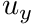
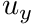

|
Chi-Tech
|
|
Chi-Tech
|
As a developer you might come across code such as
or its more elaborate cousin
The two function calls, MapDOF with 2 arguments and MapDOF with 5 arguments, are both methods of the base-class chi_math::SpatialDiscretization.
The two overloaded methods, chi_math::SpatialDiscretization::MapDOF return the global index of a degree-of-freedom (DOF). The counterparts to MapDOF are the MapDOFLocal methods that provide the local index of a DOF.
These functions are called with either 2 arguments
or with 5 arguments
chi_math::UnknownManager)These comparisons are conceptually simple. The geometry of a cell is described by its vertices (see Figure 1 below). The mesh cannot be completely defined without the vertices, therefore, cells always go hand-in-hand with vertices.
A spatial discretization (e.g., Finite Volume, PWL, Lagrange Q1, Lagrange Q2) places nodes on the mesh that may or may not coincide with some of the vertices. For example, the Finite Volume spatial discretization places a single node for each cell, at the cell's centroid (hence no coincidence with any vertex), whilst a Lagrange Q2 spatial discretization has some of its nodes on the vertices while other are not (see Figure 1 below).
Where degrees-of-freedom differ from nodes is that each node can be stacked with a number of unknowns, e.g., one might have to solve a number of physical variables in a multiphysics simulation involving 2D velocity,  and , a three energy group flux, , and pressure,
and , a three energy group flux, , and pressure,  . One can stack these variables in any form, for example:
. One can stack these variables in any form, for example:
or more elegantly
and The latter essentially means that each node can have a number of unknowns stacked onto it as shown in Figure 2 below.
The individual components of the unknowns are unique for every node and are called the degrees-of-freedom (DOFs).
All the spatial discretizations have a default unknown-manager, defined during initialization, called UNITARY_UNKNOWN_MANAGER. This allows the spatial discretization to map indices as shown in Figure 3 below
With multiple unknowns like the 2D velocity, multigroup flux, and pressure example above we can create an unknown manager with this structure as follows
Using this unknown manager to map DOFs is then done as shown below in Figure 4.
Notice here that the ordering is per-node, i.e., for each node the DOFs all the DOFs are stacked into a vector before moving to a new node. This is the default ordering in ChiTech.
To create a Block-ordered vector mapping the only modification needed is in the constructor of the unknown manager:
Now that we specified that we should use chi_math::UnknownStorageType::BLOCK the unknown manager maps as shown in Figure 5 below
Block ordering is likely desireable if one wishes to apply block-solves.